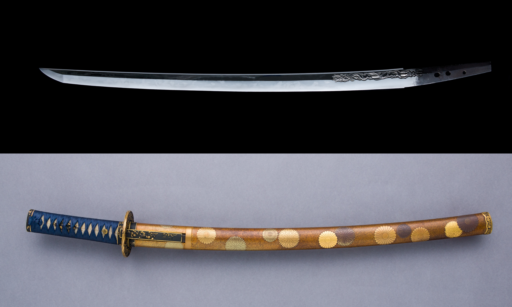
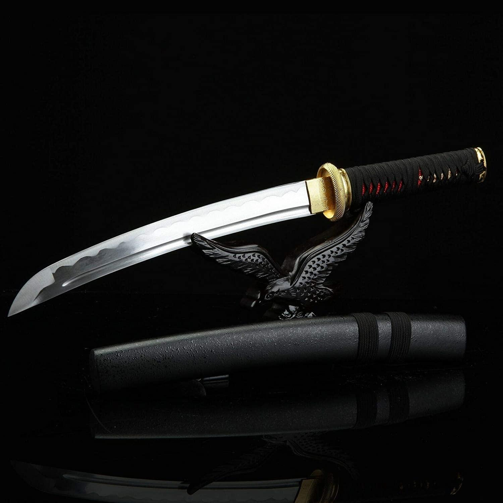

The Great
Samurai
BLADES OF THE SAMURAI
The katana's blade is between two and three feet with a single sharp edge. The sword's curve enhances its slashing ability. The signature weapon of the samurai, the katana is worn edge up so that drawing and attacking can be combined in a single motion. The blade is made of a combination of different types of steel (high carbon hard steel on the edge, low carbon soft steel at the core and medium carbon steel in different arrangements), making it strong and agile. The handle is made of wood and wrapped with stringray skin and silk cord or leather strips. The fittings are made of precious metals - gold or silver.
The wakizashi's blade is between one and two feet long. It too is curved to match the katana. The katana and wakizashi are worn together as a daisho (pair). Their curves therefore match for aesthetic reasons. The wakizashi was used primarily by samurai but could be used by merchants or other individuals as well. The blade of the wakizashi is also made of steel, but usually just one or two types of it. Since it is so small there is not much benefit to using many different steels. The handle usually matches the katana's.
The tanto is a straight bladed knife with a blade up to one foot long. The tanto sometimes accompanied the katana in place of the wakizashi, but was also sometimes used alongside both longer blades. Since it is small, sharp and tough, the tanto was used as a stabbing weapon, often to finish a fight with a deadly blow. The tanto's blade is only made of high carbon steel. The handle is either plain wood or matches the katana and wakizashi it accompanies.
BOWS OF THE SAMURAI
The medieval Japanese bow was assymetrical and about six feet long. The bow was actually the primary weapon of the samurai up to the fourteenth century, meant to be drawn from horseback by elite mounted samurai units, who would lift it above their heads and lower it while drawing. Samurai would often train with the bow through competitions and difficult challanges. The Japanese bow was made of lighter wood than its European counterpart, which accounts for its size. The string is hemp.
SPEARS OF THE SAMURAI
The yari is a lance-like spear at least eight feet long, with later iterations going up to eighteen feet. The yari replaced the bow as the main weapon of the samurai during the fourteenth century, since it was a more versatile weapon both offensively and defensively. Its length changed based on the lengths of the spears used by foot soldiers that were set to counter the mounted samurai charges. The yari spear is basically a short sword blade mounted on a long wood pole.